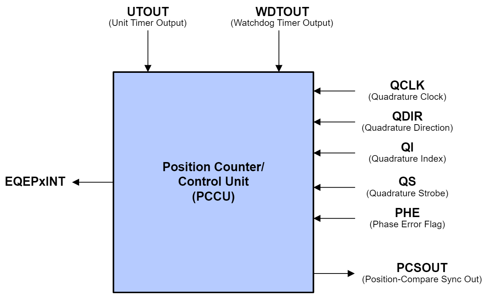

Enhanced Quadrature Encoder Pulse (eQEP)#
The Enhanced Quadrature Encoder Pulse (eQEP) module is essential when integrating C2000 devices in any application that requires motor control. The eQEP module enables the C2000 device to interact with linear or rotary incremental encoders to determine necessary motor information from rotating machines.
What is an Incremental Quadrature Encoder?#
At a high-level, an incremental quadrature encoder is a digital angular position sensor. A generic incremental encoder is composed of a disk, a pair of optical sensors, and a light source. An incremental encoder disk is patterned with a track of slots (windows which allow light to pass through) around the periphery of the disk.
The optical sensors are positioned directly across from the light source on either side of this slotted track, and as the motor rotates, the sensors detect a pattern of light and dark lines. A light line is perceived when the optical sensor is positioned over a slot in the disk, and a dark line is perceived when the light source becomes obstructed by the disk.
The data perceived by these optical sensors are denoted by two channels, channel A and channel B, that are offset by some phase difference. The frequency of these signals and their phase difference can be used to calculate information such as the direction, speed, and position of the rotating motor.

The incremental encoder disk may feature a second track with a single slot located at a fixed point. This second track can be used to produce an index signal which acts as a zero reference. This index signal, when fed into the eQEP peripheral, aids in motor positioning and pulse count verification. Because this index slot is positioned at a fixed point, this pulse occurs once per rotation and indicates to the device when a complete rotation has been made.
How is direction determined from quadrature signals?#
Quadrature signals carry valuable data that can be used to determine the direction of a motor’s rotation. The slots on a quadrature encoder are separated by a known angular difference θ, which results in the phase difference between pulse waveforms in channel A and B being fixed at θ/4 (90° offset). The channel A and B quadrature signals can be fed into the eQEP module, and the direction of motion can be decoded using a state machine.
The state encodings represent the states of channels A and B at any point in time.
when both channels are low, the encoding is (00)
when both channels are high, the encoding is (11)
when channel A is high and channel B is low, the encoding is (10)
when channel A is low and channel B is high, the encoding is (01)
Accordingly, the state transitions over one period uniquely encode the direction of rotation. For example, the state transitions (00,10,11,01) indicate a clockwise rotation, and the state transitions (01,11,10,00) indicate a counter-clockwise rotation.
Because channels A and B are offset by a fixed phase difference θ/4, they cannot both change states simultaneously. This means that in the state machine, a direct transition from (00) to (11) or vice versa represents an illegal state change. The same is true between states (01) and (10).
How is angular position and velocity determined from quadrature signals?#
The angular position of the incremental encoder can be determined in multiple ways depending on the design of the encoder. The eQEP module has a counter which keeps track of the number of pulses coming in from channels A and B. A clockwise movement results in an increment of the counter and a counter-clockwise movement results in a decrement.
The number of slots in an incremental quadrature encoder, referred to as the resolution of the encoder, is equivalent to the number of pulses in a single rotation. The number of pulses in a single rotation is denoted by PPR (pulses per rotation). Hence, the angular position of the rotary encoder is stored in the counter, incrementing and decrementing depending on the rotation of the motor.
If the quadrature encoder contains an index pulse, the position of the encoder can be found by comparing the counter value to the counter value at the previous index pulse. Alternately, the index can be used to verify the value of the encoder counter value and the angular position.
For every revolution of the encoder disk, there is typically one revolution of the motor. Thus, the frequency of the channel A and B pulses is directly proportional to the velocity of the motor. This relation is described by the following equation:
For example, a 1000-slot incremental encoder coupled to a motor running at 5000 revolutions per minute (RPM) results in channel A and B pulsing at a frequency of 300 kHz. Thus, the angular velocity can be calculated by measuring the time it takes for an arbitrary number of pulses to occur.
Applications of the eQEP Module#
The eQEP module on C2000 devices is responsible for decoding the pulse signals from incremental quadrature encoders, and is used specifically in high-performance motion and position-control systems. It is typically used as part of a control interface for tight loop motor controls in motor control applications for industrial and automotive end equipment. The eQEP module can be used to determine the position, direction, and speed of quadrature encoders. The internal position counter also enables the eQEP module to be able to keep count of the number of pulses from the input signals.
The eQEP works directly with pulse train output (PTO) module signals, which are primarily utilized in position controllers. A PTO module issues pulses to a motor which directly rotates the shaft of the motor and thus has direct control over the motor. Common types of PTO signals include clockwise (CW) and counter-clockwise (CCW) pulses. Each pulse corresponds to a fractional rotation, where CW indicates a positive increment and CCW indicates a negative increment. CW/CCW signals can function in active-high or active-low. Active-high CW/CCW signals realize motor movements when the CW or CCW signals go high, and active-low signals realize movements when the signals are brought low.
These PTO signals can be directly driven into the eQEP module. The eQEP module converts them directly into direction and clock signals, which the C2000 chip further produces into pulse-width modulation (PWM) signals intended to drive motors.
The eQEP module may also function as a 16-bit capture unit in applications where additional capture units are required beyond the dedicated eCAP modules provided on these microcontrollers. Each eQEP module features an edge-capture unit (discussed in detail further) which, in typical motor applications, aids in providing accurate estimates for low speed measurements. This capture submodule enables the eQEP module to serve as a general-purpose capture unit.
eQEP Block Diagram#
The figure below shows a summary of the connections to the eQEP module.
The inputs include two pins (EQEPxA/QEPA and EQEPxB/QEPB) for quadrature-clock mode or direction-count mode, an index pin (EQEPxI/QEPI), and a strobe pin (EQEPxS/QEPS). These pins are configured using the GPIO multiplexer and need to be enabled for synchronous input.
In quadrature-clock mode, two square wave signals from a position encoder are inputs to QEPA and QEPB which are 90 electrical degrees out of phase. This phase relationship is used to determine the direction of rotation. If the position encoder provides direction and clock outputs, instead of quadrature outputs, direction-count mode can be used. QEPA input will provide the clock signal (XCLK) and QEPB input will have the direction information (XDIR).
The QEPI index signal occurs once per revolution and can be used to indicate an absolute start position from which position information is incrementally encoded using quadrature pulses. The QEPS strobe signal can be connected to a sensor or limit switch to indicate that a defined position has been reached.
eQEP Functional Units#
The eQEP peripheral contains a number of major functional units:
Programmable input qualification for each pin (part of the GPIO MUX)
Quadrature decoder unit (QDU)
Position counter and control unit for position measurement (PCCU)
Quadrature edge-capture unit for low-speed measurement (QCAP)
Unit time base for speed/frequency measurement (UTIME)
Watchdog timer for detecting stalls (QWDOG)
Quadrature Mode Adapter (QMA)
The diagram below shows a high-level block diagram of the eQEP module and its major functional units on C2000 devices.
GPIO MUX Input Qualification#
Inputs into the eQEP module (EQEPxA, EQEPxB, EQEPxI, EQEPxS) can undergo GPIO input qualification before they are fed into the eQEP module. In instances where potential noise may distort the eQEP input signals, input qualification can aid in making the inputs more immune to noise, resulting in more stable speed and position measurement. The input qualification sampling period and type of qualification can be individually configured.
Outputs of the GPIO MUX block (EQEPxA_IN, EQEPxB_IN, EQEPxI_IN, EQEPxS_IN) are connected to the QMA (on applicable devices) and the QDU.
Quadrature Decoder Unit (QDU)#
The Quadrature Decoder Unit is the primary functional unit within the eQEP module which allows for motor control measurement. It is responsible for generating clock (QCLK) and direction (QDIR) signals which are fed into the rest of the eQEP module (e.g., position counter and control unit, edge-capture unit, etc.)
There are 4 input modes which determine the clock and direction inputs into the position counter. These are Quadrature-Count mode, Direction-Count mode, Up-Count mode, and Down-count mode.
In Quadrature-Count mode, the quadrature decoder generates the direction and clock signals from quadrature inputs QEPA, QEPB, and QEPI. The quadrature decoder uses direction decoding logic to determine the leading signal between QEPA and QEPB. The direction of movement is then fed into other functional units. Note that because the quadrature decoder samples both edges of inputs QEPA and QEPB, the generated QCLK freqency is four times the frequency of the input sequence.

Direction-Count mode is intended for use with encoders that provide direction and clock outputs as opposed to quadrature outputs. In this mode, QEPA will provide the clock signal (XCLK), and QEPB will provide the direction information (XDIR). The position counter is incremented on every QEPA rising edge when direction (QEPB) is high and decremented when the direction is low.
In Up-Count mode and Down-Count mode, the counter direction is always hard-wired high for up-count mode or low for down-count mode. The position counter is then used to measure the frequency of the QEPA input. In these modes, the QDU unit can be configured to generate clock events on both rising and falling edges of the QEPA input, essentially doubling the measurement resolution.
The inputs into the eQEP are validated and can be manipulated through software. When an invalid quadrature transition occurs (as described in How is direction determined from quadrature signals?) a phase error flag (PHE) will be set within the QDU. Each eQEP input can be inverted prior to being input into the quadrature decoder. Optionally, inputs QEPA and QEPB can be swapped through software, resulting in the counting direction being reversed.
Position Counter and Control Unit (PCCU)#
The Position Counter and Control Unit is responsible for keeping count of the encoder pulses being received by the eQEP module.
The QCLK and QDIR signals being output from the quadrature decoder unit are received by the position counter. The position counter counts the number of QCLK pulses for a particular direction in a specified period of time. The value of the position counter is directly related to the number of encoder pulses in that period. The frequency of the input signals can then be calculated, which in turn allows for the calculation of the position and speed.

By adjusting the signal or event that resets the position counter, the position counter can be used to record the total number of encoder pulses received, to document only the encoder position in the current motor revolution, or to perform another custom function. Four different modes are available, which include:
Position-Counter Reset on Index Event
Position-Counter Reset on Maximum Position
Position-Counter Reset on the first Index Event
Position-Counter Reset on Unit Time Out Event (Frequency Measurement)
The position counter has a max configurable position value which determines the upper limit of the position counter. Regardless of the mode, when a reset condition has been met, the position counter will reset to 0 if the reset occurs during forward movement. If the reset occurs during reverse movement, the position counter will be reset to the maximum position counter value.
The eQEP module can be configured to latch the position value when a specified event occurs on the index and strobe inputs.
Latching on an index event can be useful in applications which want to utilize position counter error checking and whereby the position counter is not configured to reset on the index event. In these applications, the position counter keeps track of the number of encoder pulses over multiple motor revolutions. By latching on index events, it is possible to verify whether or not the position counter accumulated the correct number of counts between index events. For example, in a 1000-line encoder, the expected count difference after one full rotation should be 4000.
The position counter can be configured to initialize to a specific value upon an index event, a strobe event, or through software initialization.
The eQEP peripheral contains a position-compare unit which can be used to generate sync outputs and/or interrupts on position-compare events. This unit has support for shadow mode, where the shadow values are loaded during a compare match or a position counter zero event.
Quadrature Edge-Capture Unit (QCAP)#
The Quadrature Edge-Capture Unit is included in the eQEP module for accurate low-speed measurements. This functional unit features an internal 16-bit capture timer that is derived from the prescaled system clock (SYSCLKOUT) and a 4-bit binary divider, which is used to generate unit position events from the QCLK signal.
On every unit position event, the value of the capture timer is stored, and the capture timer is reset. The QCAP unit measures the elapsed time between unit position events and can use this information to calculate the velocity of the motor. This is described below in the following equation:
X defines the unit position
ΔT defines the elapsed time between unit position events
v(k) describes the velocity at time k.
The low-speed measurement is accurate as long as the capture timer does not overflow (period between unit position events must be less than 65,535) and there is no change in direction. Relevant error flags will be thrown when these conditions are not met.
Unit Time Base (UTIME)#
The Unit Time Base is responsible for issuing period interrupts to the CPU for velocity calculations. These interrupts are clocked by a 32-bit unit timer, and the frequency of interrupts can be manually configured. This functional unit can also be configured to capture the position counter, capture timer, and capture period values on interrupt. These values can then be used for QCAP velocity calculation.
Watchdog Timer (QWDOG)#
The eQEP module is able to detect potential stalls and issue fault flags using the integrated Watchdog Timer. A time-out duration value can be configured within the QWDOG. When no quadrature clock events are detected in a time period such that the watchdog timer exceeds the time-out duration, the watchdog will issue an interrupt flag.
Quadrature Mode Adapter (QMA)#
QMA Only on eQEP Type 1 and Above
The Quadrature Mode Adapter unit is available only on device families with eQEP Type 1 or later. Refer to the C2000 Real-Time Control MCU Peripherals Reference Guide for more information on eQEP types.
The eQEP module features two additional modes of operation which support direct interfacing with CW/CCW signals. The Quadrature Mode Adapter enables support for these modes and alters the QEPA and QEPB inputs before they are fed into the rest of the eQEP module. The QMA module receives CW/CCW signals and converts them to clock and direction signals which can then be used by the eQEP module. It also incorporates error detection logic to detect illegal transitions on the QEPA and QEPB inputs.
By default (QMA Mode 0), the QMA is bypassed and QEPA and QEPB have a direct connection from the pins to the eQEP module. To utilize the Quadrature Mode Adapter unit, QMA Mode 1 or QMA Mode 2 must be enabled and the Quadrature Decoder Unit configured to function in Direction-Count mode.
QMA Mode 1 is intended for use when the eQEP is receiving active-low CW/CCW signals. QMA Mode 2 is intended for use when the eQEP is receiving active-high CW/CCW signals.
Resources#
Feedback
Please provide any feedback you may have about the content within C2000 Academy to: c2000_academy_feedback@list.ti.com